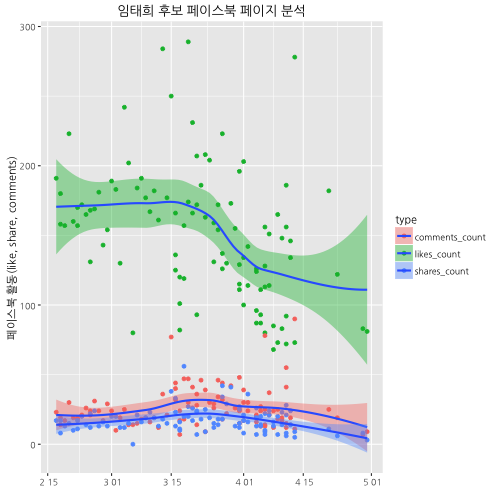

데이터 과학자가 바라본 20대 총선
페이스북 페이지 분석
페이스북 페이지 데이터
Rfacebook 팩키지를 활용하여 페이스북 페이지 데이터를 분석한다. 먼저 페이스북 개발자 페이지에 접속해서 Add a New App을 클릭하고 나서, Website를 선택한다. 사용할 페이스북앱 이름과 더불어, 연락처 및 관련된 설정을 선택한다.
fbOAuth 인자로 넘길 app_id와 app_secret 정보를 확인한 후에 R에서 목표로 삼고 있는 페이스북 페이지 정보를 가져와서 분석한다. 자세한 사항은 Analyze Facebook with R, Analyze Facebook with R을 참조한다.
1. 페이스북 페이지 데이터 분석 설정
Rfacebook을 Github을 통해 설치를 할 것이기 때문에, devtools가 필요하다. 이후, fbOAuth에서 사용될 app_id와 app_secret 정보를 넣어 페이스북 인증준비를 마친다.
주의할 점은 app_id와 app_secret을 인터넷에 노출시킬 수 없어서, save(fb_oauth, file="fb_oauth") 명령어로 처리한 점을 이해하면 좋다. fb_oauth 파일에 인증보안에 사용되는 열쇠가 포함되어 있다.
#================================================================
# 0. 환경설정
#================================================================
# library(devtools)
# install_github("Rfacebook", "pablobarbera", subdir="Rfacebook")
suppressMessages(require("Rfacebook"))
# fb_oauth <- fbOAuth(app_id="1XXXXXXXX30",
# app_secret="982XXXXXXXXXXXXXXXXXXXXdaa",
# extended_permissions = TRUE)
# save(fb_oauth, file="fb_oauth")
load("fb_oauth")2. 데이터 가져오기
성남시 분당을에 기호 6번으로 출마한 임태희 후보의 페이스북 페이지에서 가장 최근 100개 글을 가져온다. getPage 함수에, 임태희 후보 페이지명을 인자로 넘겨주고, 가져올 글을 n=에 정의하고 사용할 토큰을 token에 넘긴다.
# https://www.facebook.com/ImTEI/ 기호6번 임태희 후보
six_page <- getPage("ImTEI", n=100, token=fb_oauth)25 posts 50 posts 75 posts 100 posts
3. 데이터 정제
일자별로 분석할 것이라, ymd 함수로 fb_date 변수를 생성하고, 필요한 변수만 골라낸다. likes_count, comments_count, shares_count를 갯수로 뽑아낸다.
suppressMessages(library(dplyr))
suppressMessages(library(lubridate))
suppressMessages(library(tidyr))
six.page.long <- six_page %>%
mutate(fb_date = ymd(substr(created_time, 1,10))) %>%
select(fb_date, likes_count, comments_count, shares_count) %>%
gather(type, activity, -fb_date)4. 데이터 시각화
마지막으로 ggplot 함수로 데이터를 집어넣어 활동현황을 유형별(좋아요, 공유, 코멘트)로 시간별로 추세를 분석한다.
source("~/Dropbox/01_data_science/00-hangul-plot-setting.R") # http://freesearch.pe.kr/archives/4446 참조
suppressMessages(library(ggplot2))
ggplot(data=six.page.long) +
aes(x=fb_date, y=activity, fill=type) +
geom_point(aes(colour=type)) +
geom_smooth() +
labs(title = "임태희 후보 페이스북 페이지 분석", x="", y="페이스북 활동(like, share, comments)")